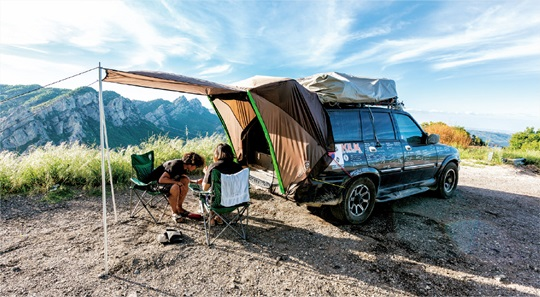
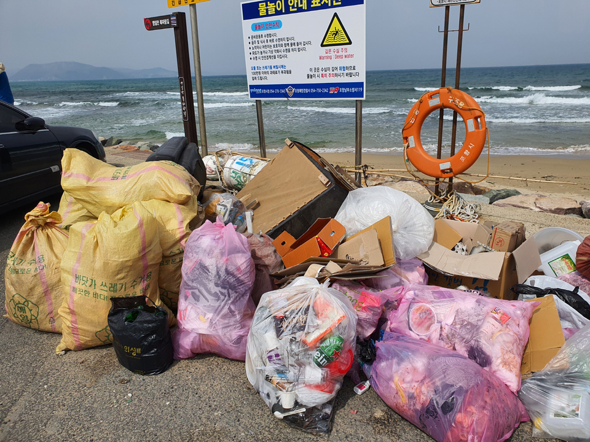

<!DOCTYPE html>
<html lang="ko">
<head>
  <meta charset="UTF-8">
  <title>blog3</title>
  <link rel="stylesheet" href="css/blog-2500.css">
</head>
</html>
<body>
  <div id="base">
    <div class="header">
      <h1>글램핑, 캠핑, 오토캠핑? 요즘은 차박이 대세야</h1>
      <p style="color: rgb(153, 153, 153)">2021.12.06</p>
    </div>
    <hr>

    <div class="content">
      <p> 코로나 시대가 끝나면 가장 먼저 하고 싶은 것은 무엇인가요? 아마 질문에 대한 대답은 대부분 "여행"일 거라고 생각한다. 
        코로나로 인해 우울한 생활을 벗어나고 자유롭게 여행을 떠나고 싶지만 상황이 여의치 않자 사람들은 이에 불만을 가졌다.
      </p>
      <p> 사람들은 어떻게든 코로나 시대 속에서 우울한 일상을 벗어날 돌파구를 찾기 위해 노력했고 그 결과 새로운 돌파구를 찾아냈다. 
        그 돌파구는 바로 캠핑이었다.
      </p>
      <p>코로나 유행 후 자유로운 캠핑이 불가능해졌는데 웬 캠핑? 이라고 생각할 수 있지만 이 캠핑은 이전과는 다른 형태의 캠핑이다. 
        일명 "차박"이라고 하는 것인데, 차로 이동하고 차에서 자는 형태의 캠핑이다. 캠핑카가 없이 차만 있으면 갈 수 있으므로 많은 
        사람들이 이에 열광하고 너도 나도 차박을 하기 시작했다.
      </p>

      
      <span style="font-size: 13px; padding-top:5px; color: rgb(129, 128, 128)">차박했을 때의 모습</span>

      <p>차박을 통해서 사람들이 스트레스를 풀고 여유를 가지는 등 좋은 점도 많았지만 차박으로 인한 문제점도 역시 존재한다. 
        많은 사람들이 바닷가 쪽으로 차박을 즐기러 가다보니 해안가에 사람이 몰리기 시작했고 자연스레 많은 차로 인해 
        혼잡해지고 사람들이 버리고 가는 쓰레기가 많아져서 쓰레기 처리 문제가 생기기도 했다.
      </p>
      
      <span style="font-size: 13px; padding-top:5px; color: rgb(129, 128, 128)">차박때문에 동해안에 쌓인 쓰레기들</span>

      <p>차박은 코로나 블루를 극복하기에 좋은 방법이고 스트레스와 우울을 떨쳐버릴 수 있어 한 번쯤은 차박을 즐기는 것도 좋을 것 같다. 
        또한, 차박을 즐기기 전에 차박을 하면서 지켜야할 매너와 에티켓을 생각하고 가면 더욱 좋을 것 같다.
      </p>
      <a href="https://www.youtube.com/watch?v=-lV8qTtGzcI" target="_blank"></a>
    </div>
    
    <div id="lightbox">
      
    </div>

    <div class="footer">

    </div>

  </div>


  <script src="lightbox.js"></script>
</body>